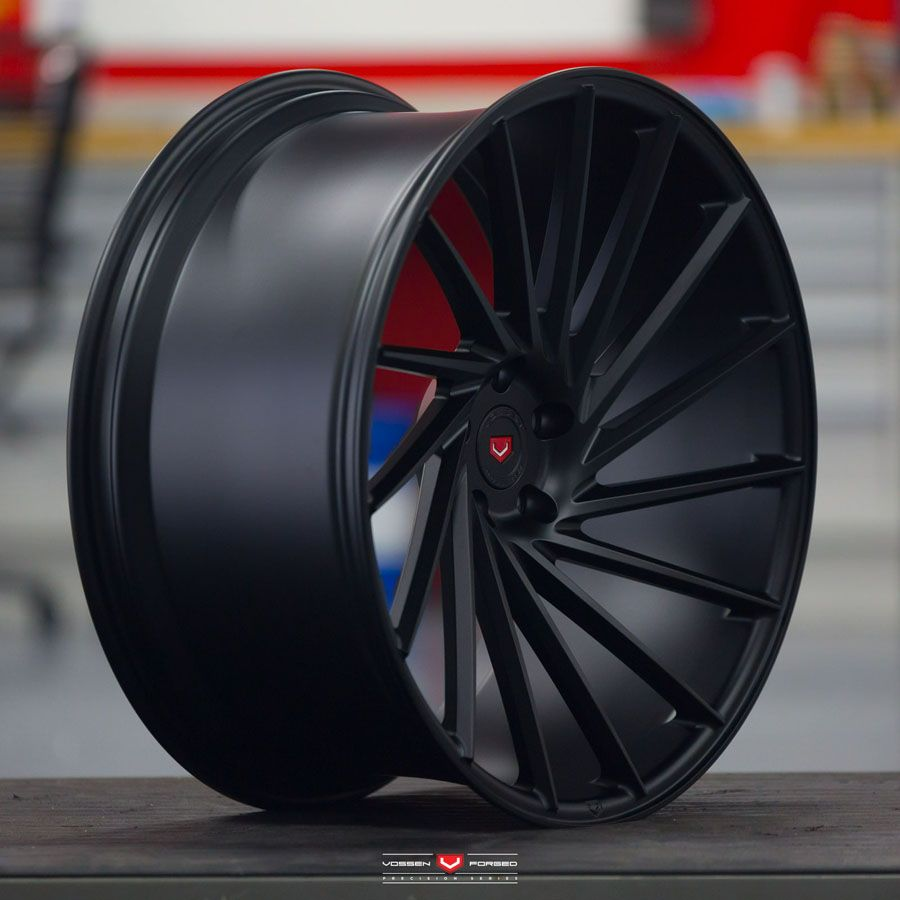
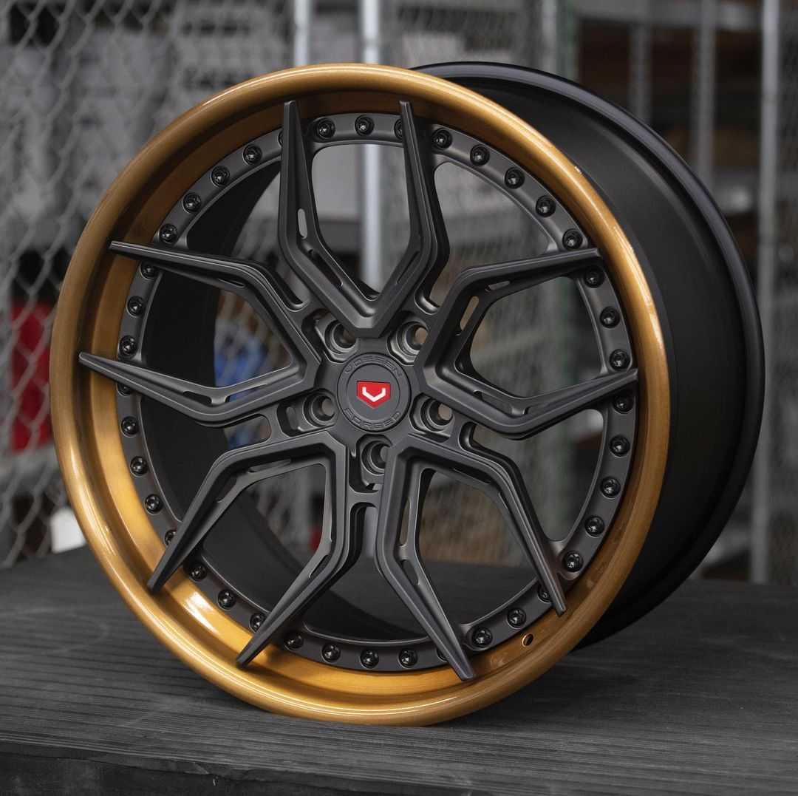
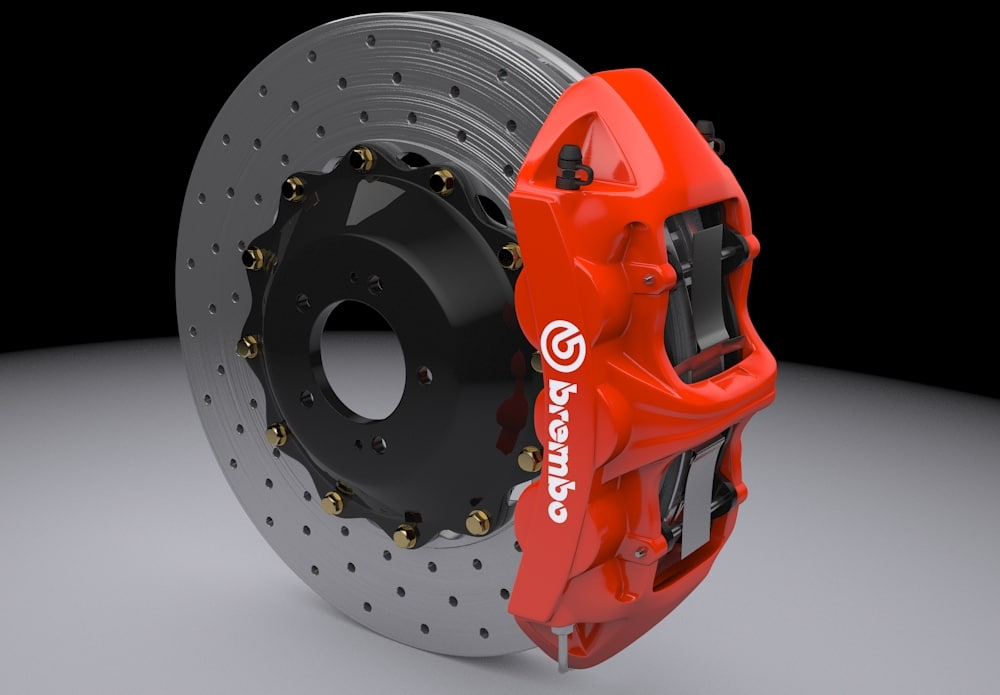
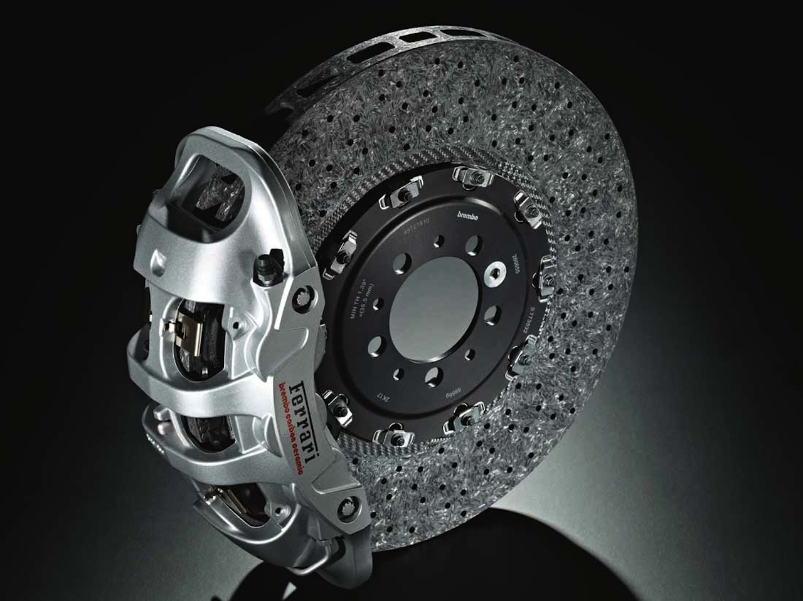

Llantas
Llanta A

Estas llantas son el epítome de la innovación en el mundo del tuning. Con un diseño aerodinámico vanguardista y una estructura reforzada, estas llantas están diseñadas para ofrecer un rendimiento excepcional en condiciones extremas. Su composición de aleación de alta resistencia garantiza una durabilidad incomparable, mientras que su patrón de agarre único maximiza la tracción en todo tipo de terrenos. Ya sea en las curvas cerradas de un circuito o en las calles de la ciudad, estas llantas proporcionan un aspecto agresivo y un rendimiento inigualable que hará que tu vehículo modificado destaque entre la multitud.
Llanta B

Diseñadas para los entusiastas del automovilismo que buscan un estilo distintivo y un rendimiento excepcional, estas llantas deportivas son la elección perfecta para cualquier vehículo personalizado. Con un diseño elegante y deportivo que combina a la perfección con la estética única de tu vehículo, estas llantas están fabricadas con los más altos estándares de calidad y precisión. Su construcción ligera y resistente garantiza una respuesta ágil y una conducción suave, mientras que su diseño optimizado mejora la eficiencia aerodinámica y la refrigeración de los frenos. Ya sea en la pista o en la carretera, estas llantas destacarán tanto por su apariencia impecable como por su rendimiento excepcional.
Frenos
Frenos A

Los frenos Brembo son sinónimo de calidad y rendimiento inigualables, y esta versión de alto rendimiento no es una excepción. Diseñados para ofrecer un frenado potente y preciso en las condiciones más exigentes, estos frenos son la elección definitiva para los conductores que buscan un rendimiento superior en la pista y en la carretera. Fabricados con materiales de la más alta calidad y tecnología de vanguardia, estos frenos proporcionan una respuesta instantánea y una modulación precisa, lo que garantiza un control total en cualquier situación. Además, su diseño innovador y su construcción robusta ofrecen una disipación de calor óptima, lo que reduce la posibilidad de fatiga del freno y garantiza un rendimiento constante en cada frenada.
Frenos B

Diseñado para los pilotos más exigentes y las condiciones más extremas, este sistema de frenos Brembo de competición es la elección definitiva para aquellos que buscan el máximo rendimiento en la pista. Con componentes de alta resistencia y tecnología de vanguardia, estos frenos ofrecen una potencia de frenado excepcional y una modulación precisa en cada curva y recta. Su diseño ligero y aerodinámico minimiza la masa no suspendida, lo que mejora la agilidad y la capacidad de respuesta del vehículo. Además, su capacidad de disipación de calor superior garantiza un rendimiento constante incluso en las condiciones más exigentes de la competición. Con estos frenos Brembo de competición, estarás un paso adelante en cada carrera.